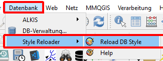
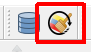
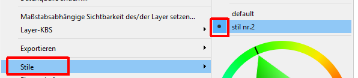
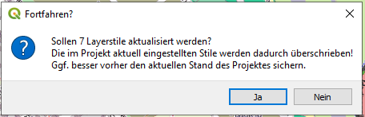

Das Plugin lädt für alle im QGIS-Projekt vorhandenen PostgreSQL-Layer die in der Datenbank hinterlegten default-Stile und überschreibt damit die aktuell eingestellten aktiven Stile der Layer.
Zu finden ist es :
im Datenbank-Menü:
in der Datenbank-Toolbar:
Hierbei wird der im QGIS-Projekt hinterlegte aktive Stil überschrieben.
( Der im QGIS-Projekt für den Layer gerade aktive Stil muss nicht zwingend der im QGIS-Projekt hinterlegte Default-Stil des Layers sein.)

Da ein Überschreiben des gerade aktiv eingestellten Stiles ggf. nicht erwünscht ist erfolgt erst eine Rückfrage bevor der Stil überschrieben wird: